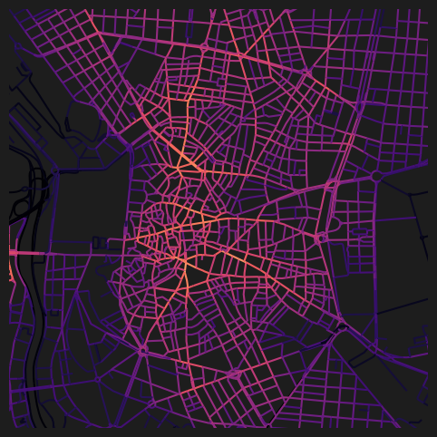
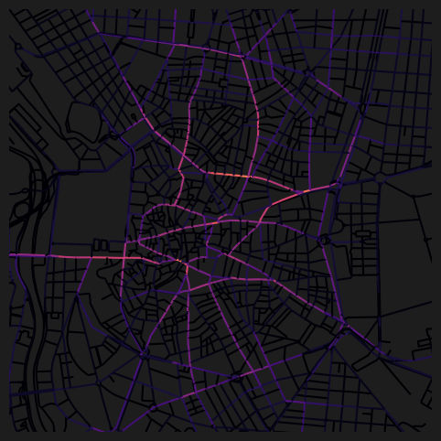
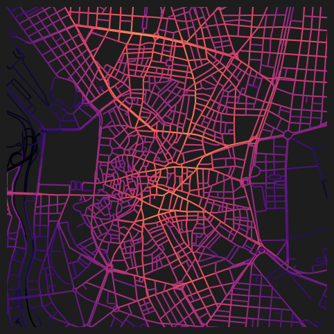
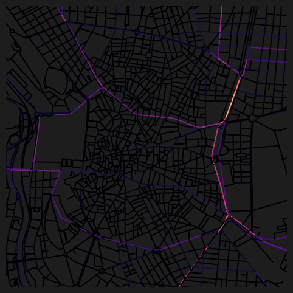
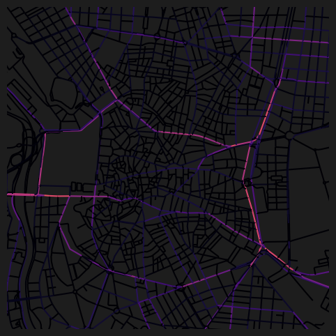

import geopandas as gpd
import matplotlib.pyplot as plt
from cityseer.metrics import networks
from cityseer.tools import graphs, io
Angular distance network centrality
Calculate angular (geometric or “simplest”) distance centralities from a geopandas GeoDataFrame.
Prepare the network as shown in other examples. Working with the dual graph is recommended.
streets_gpd = gpd.read_file("data/madrid_streets/street_network.gpkg")
streets_gpd = streets_gpd.explode(reset_index=True)
G = io.nx_from_generic_geopandas(streets_gpd)INFO:cityseer.tools.graphs:Merging parallel edges within buffer of 1.Load the study area boundary and set live=True for nodes inside the boundary. Nodes outside the boundary act as a buffer to prevent edge rolloff — they are used for routing but metrics are not computed for them. See the live nodes example for more details.
from shapely import geometry
bounds_gpd = gpd.read_file("data/madrid_bounds/madrid_bounds.gpkg")
boundary_poly = bounds_gpd.geometry.iloc[0]
for node_idx, node_data in G.nodes(data=True):
node_pnt = geometry.Point(node_data["x"], node_data["y"])
if node_pnt.intersects(boundary_poly):
G.nodes[node_idx]["live"] = True
else:
G.nodes[node_idx]["live"] = FalseG_dual = graphs.nx_to_dual(G)INFO:cityseer.tools.graphs:Converting graph to dual.
INFO:cityseer.tools.graphs:Preparing dual nodes
INFO:cityseer.tools.graphs:Preparing dual edges (splitting and welding geoms)Use network_structure_from_nx from the cityseer package’s io module to prepare the GeoDataFrames and NetworkStructure.
# prepare the data structures
nodes_gdf, _edges_gdf, network_structure = io.network_structure_from_nx(
G_dual,
)INFO:cityseer.tools.io:Preparing node and edge arrays from networkX graph.
INFO:cityseer.graph:Edge R-tree built successfully with 452252 items.Use the node_centrality_simplest function from the cityseer package’s networks module to calculate shortest angular (geometric or “simplest”) distance centralities. The function requires a NetworkStructure and nodes GeoDataFrame prepared with the network_structure_from_nx function in the previous step.
The function can calculate centralities for numerous distances at once via the distances parameter, which accepts a list of distances.
The function returns the nodes GeoDataFrame with the outputs of the centralities added as columns. The columns are named cc_{centrality}_{distance}_ang. Standard geopandas functionality can be used to explore, visualise, or save the results. See the documentation for more information on the available centrality formulations.
distances = [500, 2000]
nodes_gdf = networks.node_centrality_simplest(
network_structure=network_structure,
nodes_gdf=nodes_gdf,
distances=distances,
)
nodes_gdf.head()INFO:cityseer.metrics.networks:Computing node centrality (simplest).
INFO:cityseer.metrics.networks: Full: 500m, 2000m| ns_node_idx | x | y | z | live | weight | primal_edge | primal_edge_node_a | primal_edge_node_b | primal_edge_idx | ... | cc_density_500_ang | cc_harmonic_500_ang | cc_farness_500_ang | cc_hillier_500_ang | cc_density_2000_ang | cc_harmonic_2000_ang | cc_farness_2000_ang | cc_hillier_2000_ang | cc_betweenness_500_ang | cc_betweenness_2000_ang | |
|---|---|---|---|---|---|---|---|---|---|---|---|---|---|---|---|---|---|---|---|---|---|
| x429937.0-y4446780.0_x429947.0-y4446831.0_k0 | 0 | 429942.000000 | 4.446806e+06 | None | False | 1 | LINESTRING (429937 4446780, 429947 4446831) | x429937.0-y4446780.0 | x429947.0-y4446831.0 | 0 | ... | 0.0 | 0.0 | 0.0 | NaN | 0.0 | 0.0 | 0.0 | NaN | 0.0 | 0.0 |
| x429804.0-y4446863.0_x429937.0-y4446780.0_k0 | 1 | 429869.198345 | 4.446814e+06 | None | False | 1 | LINESTRING (429804 4446863, 429921 4446775, 42... | x429937.0-y4446780.0 | x429804.0-y4446863.0 | 0 | ... | 0.0 | 0.0 | 0.0 | NaN | 0.0 | 0.0 | 0.0 | NaN | 0.0 | 0.0 |
| x429804.0-y4446863.0_x429947.0-y4446831.0_k0 | 2 | 429875.500000 | 4.446847e+06 | None | False | 1 | LINESTRING (429804 4446863, 429947 4446831) | x429947.0-y4446831.0 | x429804.0-y4446863.0 | 0 | ... | 0.0 | 0.0 | 0.0 | NaN | 0.0 | 0.0 | 0.0 | NaN | 0.0 | 0.0 |
| x429947.0-y4446831.0_x429960.0-y4446891.0_k0 | 3 | 429953.500000 | 4.446861e+06 | None | False | 1 | LINESTRING (429947 4446831, 429960 4446891) | x429947.0-y4446831.0 | x429960.0-y4446891.0 | 0 | ... | 0.0 | 0.0 | 0.0 | NaN | 0.0 | 0.0 | 0.0 | NaN | 0.0 | 0.0 |
| x429804.0-y4446863.0_x429815.0-y4446919.0_k0 | 4 | 429809.500000 | 4.446891e+06 | None | False | 1 | LINESTRING (429804 4446863, 429815 4446919) | x429804.0-y4446863.0 | x429815.0-y4446919.0 | 0 | ... | 0.0 | 0.0 | 0.0 | NaN | 0.0 | 0.0 | 0.0 | NaN | 0.0 | 0.0 |
5 rows × 21 columns
nodes_gdf.columnsIndex(['ns_node_idx', 'x', 'y', 'z', 'live', 'weight', 'primal_edge',
'primal_edge_node_a', 'primal_edge_node_b', 'primal_edge_idx',
'dual_node', 'cc_density_500_ang', 'cc_harmonic_500_ang',
'cc_farness_500_ang', 'cc_hillier_500_ang', 'cc_density_2000_ang',
'cc_harmonic_2000_ang', 'cc_farness_2000_ang', 'cc_hillier_2000_ang',
'cc_betweenness_500_ang', 'cc_betweenness_2000_ang'],
dtype='object')nodes_gdf["cc_betweenness_2000_ang"].describe()count 220036.000000
mean 3399.290192
std 12461.472217
min 0.000000
25% 0.000000
50% 0.000000
75% 201.000000
max 263866.116667
Name: cc_betweenness_2000_ang, dtype: float64fig, ax = plt.subplots(1, 1, figsize=(8, 6), facecolor="#1d1d1d")
nodes_gdf.plot(
column="cc_harmonic_500_ang",
cmap="magma",
legend=False,
ax=ax,
)
ax.set_xlim(438500, 438500 + 3500)
ax.set_ylim(4472500, 4472500 + 3500)
ax.axis(False)(np.float64(438500.0),
np.float64(442000.0),
np.float64(4472500.0),
np.float64(4476000.0))
fig, ax = plt.subplots(1, 1, figsize=(8, 6), facecolor="#1d1d1d")
nodes_gdf.plot(
column="cc_betweenness_2000_ang",
cmap="magma",
legend=False,
ax=ax,
)
ax.set_xlim(438500, 438500 + 3500)
ax.set_ylim(4472500, 4472500 + 3500)
ax.axis(False)(np.float64(438500.0),
np.float64(442000.0),
np.float64(4472500.0),
np.float64(4476000.0))
Alternatively, you can define the distance thresholds using a list of minutes instead.
nodes_gdf = networks.node_centrality_simplest(
network_structure=network_structure,
nodes_gdf=nodes_gdf,
minutes=[15],
)INFO:cityseer.metrics.networks:Computing node centrality (simplest).
INFO:cityseer.metrics.networks: Full: 1200mThe function will map the minutes values into the equivalent distances, which are reported in the logged output.
nodes_gdf.columnsIndex(['ns_node_idx', 'x', 'y', 'z', 'live', 'weight', 'primal_edge',
'primal_edge_node_a', 'primal_edge_node_b', 'primal_edge_idx',
'dual_node', 'cc_density_500_ang', 'cc_harmonic_500_ang',
'cc_farness_500_ang', 'cc_hillier_500_ang', 'cc_density_2000_ang',
'cc_harmonic_2000_ang', 'cc_farness_2000_ang', 'cc_hillier_2000_ang',
'cc_betweenness_500_ang', 'cc_betweenness_2000_ang',
'cc_density_1200_ang', 'cc_harmonic_1200_ang', 'cc_farness_1200_ang',
'cc_hillier_1200_ang', 'cc_betweenness_1200_ang'],
dtype='object')As per the function logging outputs, 15 minutes has been mapped to 1200m at default speed_m_s, so the corresponding outputs can be visualised using the 1200m columns. Use the configurable speed_m_s parameter to set a custom metres per second walking speed.
fig, ax = plt.subplots(1, 1, figsize=(8, 6), facecolor="#1d1d1d")
nodes_gdf.plot(
column="cc_harmonic_1200_ang",
cmap="magma",
legend=False,
ax=ax,
)
ax.set_xlim(438500, 438500 + 3500)
ax.set_ylim(4472500, 4472500 + 3500)
ax.axis(False)(np.float64(438500.0),
np.float64(442000.0),
np.float64(4472500.0),
np.float64(4476000.0))
Sampled centrality for larger distances
For larger distance thresholds, the computational cost increases substantially. The node_centrality_simplest function supports a sample=True parameter that uses a sampling strategy to compute centralities more efficiently at larger scales while maintaining a relatively high degree of rank performance. Rather use non-sampled when generating publication-quality results.
distances = [10000]
nodes_gdf = networks.node_centrality_simplest(
network_structure=network_structure,
nodes_gdf=nodes_gdf,
distances=distances,
sample=True,
)
nodes_gdf.columnsINFO:cityseer.metrics.networks:Computing node centrality (simplest).
WARNING:cityseer.metrics.networks:Sampling is experimental: API and behaviour may change in future releases.
INFO:cityseer.metrics.networks: Sampled 10000m: p=17%Index(['ns_node_idx', 'x', 'y', 'z', 'live', 'weight', 'primal_edge',
'primal_edge_node_a', 'primal_edge_node_b', 'primal_edge_idx',
'dual_node', 'cc_density_500_ang', 'cc_harmonic_500_ang',
'cc_farness_500_ang', 'cc_hillier_500_ang', 'cc_density_2000_ang',
'cc_harmonic_2000_ang', 'cc_farness_2000_ang', 'cc_hillier_2000_ang',
'cc_betweenness_500_ang', 'cc_betweenness_2000_ang',
'cc_density_1200_ang', 'cc_harmonic_1200_ang', 'cc_farness_1200_ang',
'cc_hillier_1200_ang', 'cc_betweenness_1200_ang',
'cc_density_10000_ang', 'cc_harmonic_10000_ang', 'cc_farness_10000_ang',
'cc_hillier_10000_ang', 'cc_betweenness_10000_ang'],
dtype='object')For shorter distances where the number of reachable nodes is small, full computation is used. For larger distances, the function applies sampling to achieve the target accuracy efficiently.
fig, ax = plt.subplots(1, 1, figsize=(8, 6), facecolor="#1d1d1d")
nodes_gdf.plot(
column="cc_betweenness_10000_ang",
cmap="magma",
legend=False,
ax=ax,
)
ax.set_xlim(438500, 438500 + 3500)
ax.set_ylim(4472500, 4472500 + 3500)
ax.axis(False)(np.float64(438500.0),
np.float64(442000.0),
np.float64(4472500.0),
np.float64(4476000.0))
Tolerance for near-simplest paths
The tolerance parameter allows betweenness to count paths that are within a given percentage of the simplest (lowest angular cost) path. For angular centrality, a larger tolerance (e.g. tolerance=20.0) can be appropriate since angular costs are more ambiguous than metric distances. This produces more distributed betweenness distributions by accounting for near-optimal route choices.
distances = [5000]
nodes_gdf = networks.node_centrality_simplest(
network_structure=network_structure,
nodes_gdf=nodes_gdf,
distances=distances,
sample=True,
tolerance=20.0,
)
nodes_gdf.columnsINFO:cityseer.metrics.networks:Computing node centrality (simplest).
WARNING:cityseer.metrics.networks:Sampling is experimental: API and behaviour may change in future releases.
INFO:cityseer.metrics.networks: Sampled 5000m: p=59%
WARNING:cityseer.centrality:Tolerance 20.0% is high — values above 2% increasingly diffuse route concentration, especially at larger distance thresholds.Index(['ns_node_idx', 'x', 'y', 'z', 'live', 'weight', 'primal_edge',
'primal_edge_node_a', 'primal_edge_node_b', 'primal_edge_idx',
'dual_node', 'cc_density_500_ang', 'cc_harmonic_500_ang',
'cc_farness_500_ang', 'cc_hillier_500_ang', 'cc_density_2000_ang',
'cc_harmonic_2000_ang', 'cc_farness_2000_ang', 'cc_hillier_2000_ang',
'cc_betweenness_500_ang', 'cc_betweenness_2000_ang',
'cc_density_1200_ang', 'cc_harmonic_1200_ang', 'cc_farness_1200_ang',
'cc_hillier_1200_ang', 'cc_betweenness_1200_ang',
'cc_density_10000_ang', 'cc_harmonic_10000_ang', 'cc_farness_10000_ang',
'cc_hillier_10000_ang', 'cc_betweenness_10000_ang',
'cc_density_5000_ang', 'cc_harmonic_5000_ang', 'cc_farness_5000_ang',
'cc_hillier_5000_ang', 'cc_betweenness_5000_ang'],
dtype='object')fig, ax = plt.subplots(1, 1, figsize=(8, 6), facecolor="#1d1d1d")
nodes_gdf.plot(
column="cc_betweenness_5000_ang",
cmap="magma",
legend=False,
ax=ax,
)
ax.set_xlim(438500, 438500 + 3500)
ax.set_ylim(4472500, 4472500 + 3500)
ax.axis(False)(np.float64(438500.0),
np.float64(442000.0),
np.float64(4472500.0),
np.float64(4476000.0))
Summary
This notebook demonstrated how to calculate angular (simplest-path) centralities from a geopandas GeoDataFrame. Angular analysis weights paths by cumulative turning angle rather than distance, capturing route directness and identifying streets that form part of straighter, more navigable corridors. It also showed how to use the sample parameter for efficient computation at larger distance thresholds, and the tolerance parameter for near-simplest path betweenness.
Next steps:
- To calculate metric (shortest-path) centralities instead, see Metric Centrality.
- To calculate centralities directly from OpenStreetMap data, see OSM Centrality.
- To compute accessibility or mixed-use metrics over the same network, see the Accessibility recipes.